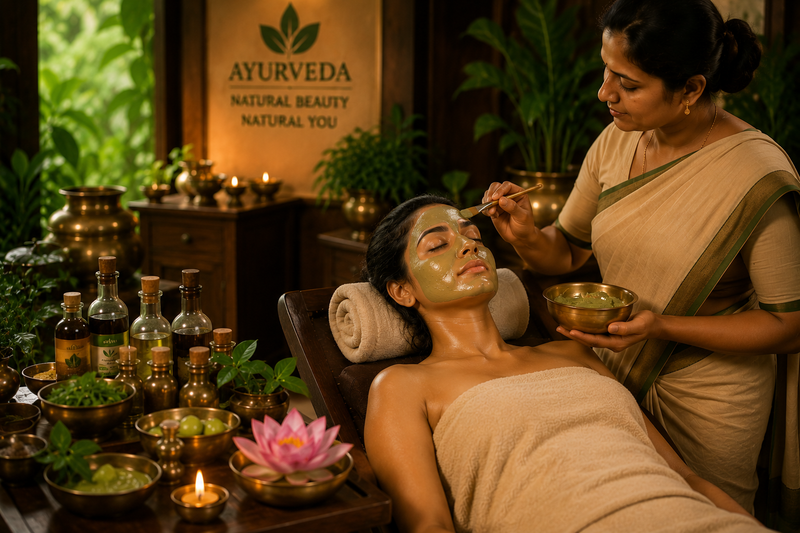

Bridging Ayurvedic Rigour and Modern Diagnosis
At AyurQ, we firmly believe that Ayurveda is not just generic rejuvenation, but a profound and precise science of clinical therapeutics. To maintain maximum efficacy, we organize our practice into dedicated specialty departments, mimicking clinical hospital environments while retaining a serene, residential retreat atmosphere.
Each department is headed by an expert physician with certified hospital practice. They combine classical methods like **Nadi Pariksha** (Vedic pulse reading) with standard diagnostic markers (blood metrics, MRI scans, and physical range-of-motion assessments) to monitor and evidence your structural correction.
Clinical Excellence Quality Seal
Pure Ayurvedic Standards- BAMS / MD qualified doctors only
- Pure cold-pressed medicated oils
- Sourced direct from historic Kerala houses
- Precise post-treatment monitoring

Orthopaedic & Spine Care
Asthi & Sandhi RogasSpecialized non-surgical care targeting structural spine and joint disorders. We work to reverse chronic disc herniation, sciatica, cervical spondylosis, and osteoarthritis. Using targeted localized pool therapies, we lubricate dry joints, stimulate blood circulation, and regenerate damaged cartilage tissues safely.
- Janu Basti (Knee Pool)
- Greeva Basti (Cervical)
- Kati Basti (Lumbar Pool)
- Patra Pinda Sweda

Neurology & Rehab
Vata Vyadhi ChikitsaRehabilitative therapies aimed at resolving chronic neurological and neuromuscular conditions. We provide clinical support for post-stroke recovery, hemiplegia, Parkinson's symptoms, peripheral neuropathy, and muscular dystrophy. Focused hot oil streams and systemic purges nourish depleting nerve fibers and return sensory pathways to balance.
- Pizhichil (Oil Bath)
- Shirodhara
- Njavara Kizhi
- Matra Basti

Mental Wellness
Manasa Roga ChikitsaHolistic care to calm sensory overstimulation, reduce severe insomnia, alleviate chronic anxiety, and mitigate mental burnout. We combine organic brain-tonifying herbal mixtures (Medhya Rasayanas) with calming external therapies to soothe the sympathetic nervous system and stimulate serotonin pathways naturally.
- Takradhara (Buttermilk)
- Shiro Vasthi
- Abhyanga Massage
- Pranayama & Meditation

Women's Wellness
Prasuti & Stri RogaSpecialized care addressing PCOD, uterine fibroids, irregular menstruation, thyroid imbalances, menopause distress, and female fertility support. We concentrate on cleansing internal pathways, balancing estrogen-progesterone cycles, and strengthening uterine tissues through non-invasive classical therapies.
- Uttar Basti (Specialized)
- Yoniprakshalana
- Udvartana (Herbal Scrub)
- Matra Basti

Internal Medicine
KayachikitsaThe foundation of Ayurvedic medicine, addressing metabolic syndromes, fatty liver diseases, type-2 diabetes management, IBS, chronic acidity, and auto-immune issues. By kindling the central digestive fire (Jatharagni) and eliminating deeply stored cellular toxins (Ama), we stabilize systemic metabolism permanently.
- Virechana (Purgation)
- Vamana (Emesis)
- Custom Herbal Decoctions
- Pathya Food Programs

ENT & Eye Care
Shalakya TantraSpecialized therapies targeting the organs above the neck. We successfully treat chronic sinusitis, migraine, allergic rhinitis, early-stage cataracts, dry eye syndrome, and tinnitus. Nasal administrations of medicated oils clear deep congestion and strengthen localized cranial senses safely.
- Nasya (Nasal Drops)
- Netra Tarpana (Eye Pool)
- Karnapoorana (Ear Pool)
- Shirodhara Stream

Pediatric Wellness
KaumarbhrityaSpecialized organic remedies supporting natural immunity, respiratory health, appetite stimulation, and cognitive growth in children. We strictly execute the traditional monthly pediatric immunization ritual (**Swarnaprashana**) utilizing pure gold microparticles, organic honey, and brain-stimulating herbs.
- Swarnaprashana Drops
- Balaraksha Herbs
- Gentle Abhyanga
- Gut Health Tonics

Yoga & Naturopathy
Swasthavritta & YogaA vital auxiliary department locking in your clinical gains through personalized structural postures (Asanas), specific pranayama breathworks, and hydrotherapy. We design targeted routines that fit your specific spinal capacity, strengthening deep postural muscles, reducing hypertension, and stabilizing respiratory rhythms.
- Therapeutic Yoga
- Pranayama Cleansing
- Spinal Cold Packs
- Meditative Nidra
Conditions We Successfully Treat
Search or locate your symptoms below to discover the target clinical department, recommended therapies, and expected recovery metrics.
Target Department: Orthopaedic & Spine Care
Treatment Approach: Localized warm medicated herbal oil pools (Kati Basti, Janu Basti) to rehydrate thinning intervertebral discs, followed by Patra Pinda Sweda (herbal bundle massage) to release rigid muscle spasms and soothe pinched nerves.
Target Department: Neurology & Rehab
Treatment Approach: Deep oil bath streams (Pizhichil) combined with warm Njavara rice massage bags to stimulate peripheral motor nerves, returning metabolic nourishment and kinetic circulation to depleted muscle fibers.
Target Department: Women's Wellness Stri-Roga
Treatment Approach: Mild internal oil purges (Matra Basti) to regulate Apana Vata (the energy governing pelvic organs), complemented by vaginal sterile irrigations (Yoniprakshalana) to restore natural hormonal cycles and tissue pH.
Target Department: Mental Wellness Clinic
Treatment Approach: Shirodhara (warm medicated oil streams directed to the forehead) and Takradhara (cool medicated buttermilk streams) to down-regulate overstimulated adrenals, restoring peaceful sleep patterns.
Target Department: Internal Medicine Kayachikitsa
Treatment Approach: Complete physiological detox via virechana (controlled purgation) to eliminate accumulated bile (Pitta) and toxins (Ama) from intestinal layers, followed by targeted custom herbal decoctions.
Target Department: ENT & Eye Care Shalakya
Treatment Approach: Instillations of medicated herbal oils directly into nasal passages (Nasya) to purge locked-in sinus cavities, combined with Netra Tarpana (medicated ghee pools over eyes) to release ocular nerve tension.